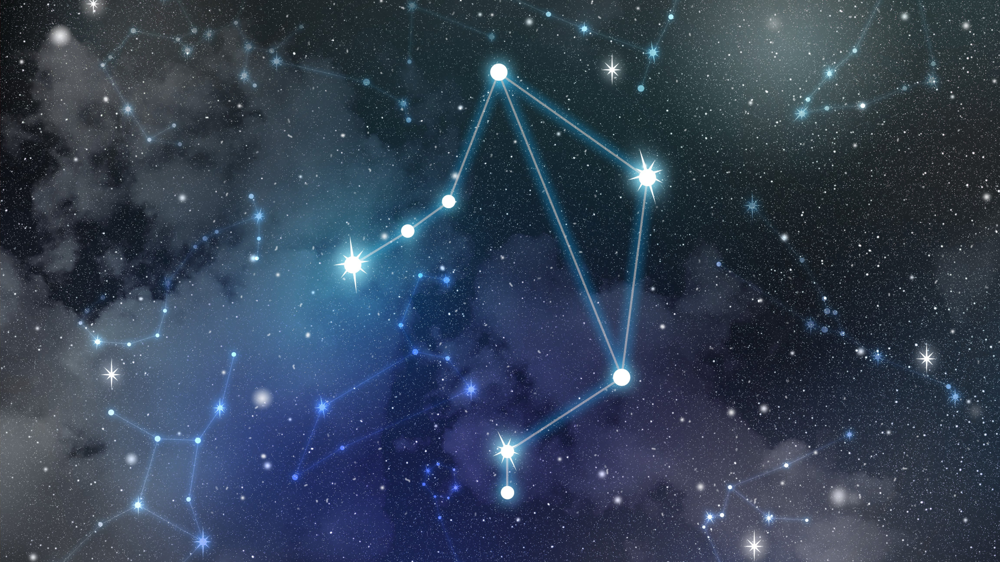
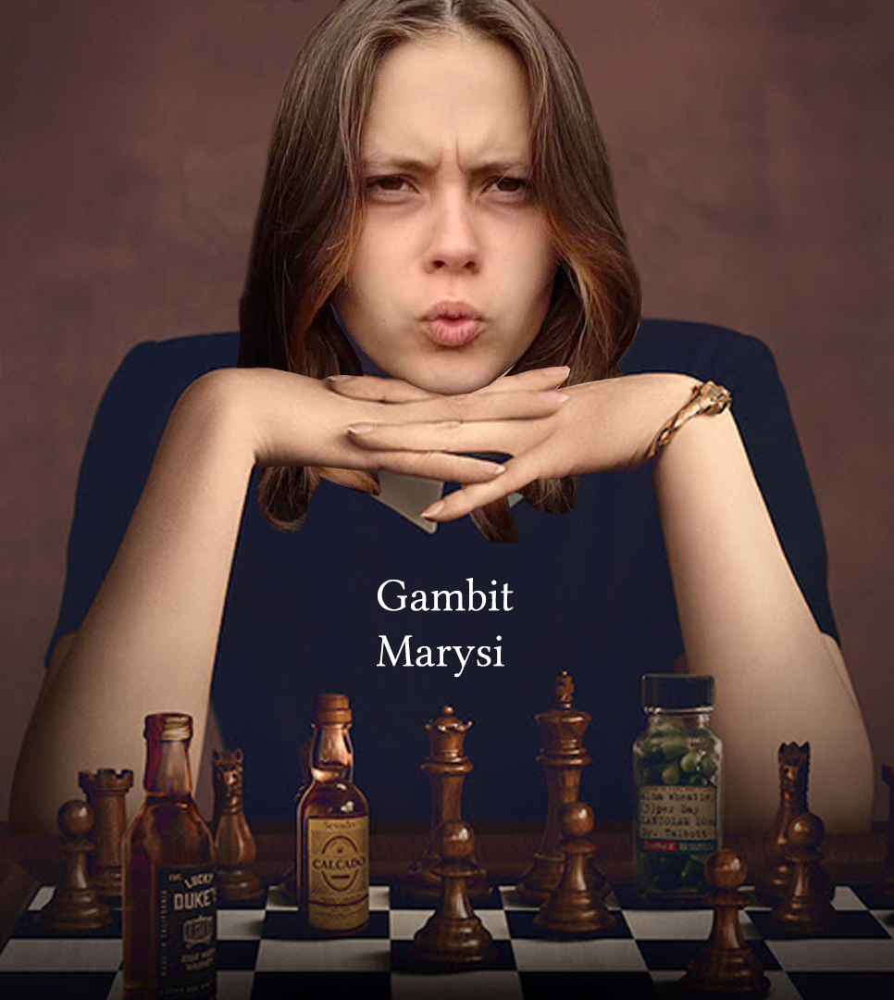
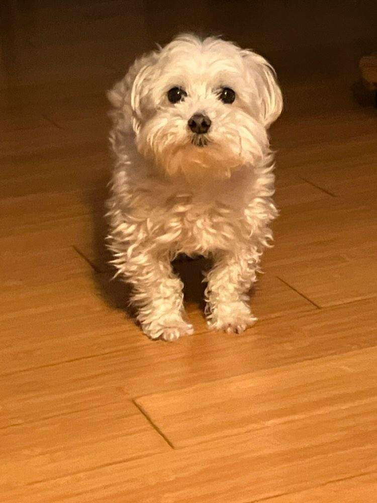
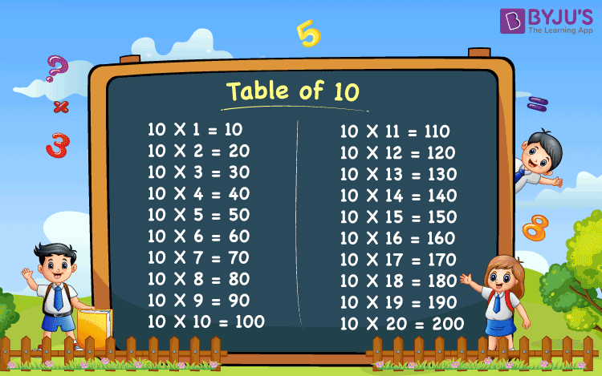

No i cóż, to 10 październik! Urodziny!
Już tyle życzeń składałem, tyle tego wszystkiego, aż ciężko wymyślić kolejne, prawda? Dlatego no, postaram się wymienić kilka powodów dlaczego jesteś taka super jaka jesteś!
1. Znak zodiaku
Twoim znakiem zodiaku jest cóż, właśnie waga! Dlatego uwaga!:
Cechuje Cię rozwaga w trudnych decyzjach i powaga w ciężkich sytuacjach. W trakcie debat dokładnie ważysz swoje słowa, drzemie też w Tobie odwaga. Gdyby to Anubis zważył twe serce na wadze podczas Sądu Ozyrysa, to byłoby ono zdecydowanie lżejsze od pióra!
I no, jesteś dla mnie bardzo ważna
2. Piękno

Mówiłem to wiele razy, powiem i kolejny:
JESTEŚ PRZEPIĘKNA, IDEALNA NO
Nom, komplementowałem Cię na chyba każdy sposób jaki znam, także cóż, nie mam chyba nic do dodania hah! Jesteś prześliczna! 😘
3. Umiejętności szydełkowania
Tak to Ty! Królowa szydełka!
Cóż mogę rzec! Wszystko co robisz jest świetne! Uwielbiam czapkę od Ciebie, woreczek na kostki, podkładki pod kubek dla mojej mamy no i przede wszystkim Kacperka! Jest super!
Swetry, topy, czy inne ciuchy, które sobie robisz są równie zajebiste i czadersko w nich wyglądasz!😍
4. Inteligencja
Well, u smart
U very smart
Bardzo często wygrywałaś ze mną w warcaby. I no, miażdżyłaś w mądrą grę i remika XD. W szkole też sobie super radzisz z matmą! IQ 9999 po prostu 😎
5. Pies
Frocia
Frocia jest zajebista!
Ty masz Frocię i jesteś zajebista!
6. Nawet czasoprzestrzeń nie jest w stanie pomieścić Twej wspaniałości

Umm, to załamanie przestrzenne wciągnęło mi punkty 7, 8 i 9, nwm gdzie są ._.
10. Data urodzenia
Jesteś dzisiejszą datą!!! Bo jesteś 10/10 😍
Cóż, urodziłaś się 10 października, to jasne, że musisz być 10 na 10. W końcu to nawet 10 punkt! Jesteś wspaniała no!
Chociaż muszę przyznać, że moją skalę to już dawno przebiłaś 🥰
Szczęśliwych urodzin, liczę, że wszystkie prezenty się spodobały ;)
Aleks "Kenzocenzo, Chuj" Rogoziński